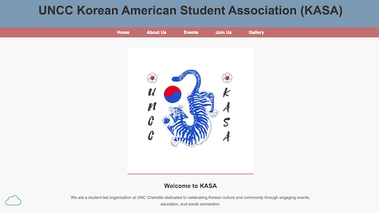

Peer Review 2: Jackson Lee

Jackson Lee Client Project Landing Page
Website Evaluation Checklist:
Navigation/Organization
- Page Submission (✔️): submission leads right to the page to be reviewed
- Folder Names (✔️): no caps or spaces in file/folder names
Design
- Readability (✔️): contrast is used correctly (except in footer) and font size is large enough to read comfortably
- CSS Usage (✔️): site uses standard .css file and does not contain any unresolved errors/warnings
- CRAP Principles (✔️): meets contrast, repetition, alignment, and proximity requirements
Page Structure:
- Structure Elements (✔️): contains a header, main, and footer
- Main Content (✔️): starts with the name of the page as an h2
- Validation (✔️): uses Accumulus for html and css validation
- Footer (✔️): contains the necessary info/link and sticks to bottom of page
- Nav (✔️): contains all necessary links, included on all pages, consistent position on all pages
Other Notes:
- Website is easy to navigate
- Paragraphs should not be centered (in about and home page)
- Content is all engaging
- Image warnings still need to be addressed
- Confirmation message for form submission on contact page is a neat feature